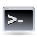

Terminal
Dieser Artikel wurde für die folgenden Ubuntu-Versionen getestet:
Dieser Artikel ist größtenteils für alle Ubuntu-Versionen gültig.
Zum Verständnis dieses Artikels sind folgende Seiten hilfreich:
 Ein Terminal, auch Shell oder Kommandozeile genannt, stellt eine textbasierte Ein-/Ausgabe-Schnittstelle für ein Computersystem dar. Auch der Begriff Konsole ist geläufig, bezeichnet aber kein Fenster, sondern einen Bildschirm im Textmodus. Im Terminalfenster können Befehle [1] eingegeben und so das System gesteuert oder Dateien bearbeitet werden. Eine genauere Erklärung zum Thema Terminal findet man in Terminalemulation, eine erste Einführung in die Benutzung in Shell/Einführung.
Der Begriff Terminal umfasst auch Hardwareterminals, wie z.B. bei Thin Clients (werden hier nicht beschrieben).
Standardterminalprogramme¶
| Unity |
| KDE |
| Xfce |
| LXDE |
 |
| GNOME-Shell |
| MATE |
Unity¶
Mausklick links  auf das Ubuntu-Symbol
auf das Ubuntu-Symbol  links oben in der Menüleiste und die Eingabe von
links oben in der Menüleiste und die Eingabe von Terminal in das Textfeld zeigen unter Unity die verfügbaren Terminalprogramme. "Terminal" ist das Standardterminal. Alternativ lässt sich ein Terminal auch mit Tastenkombination
Strg +
Alt +
T öffnen.
Wer öfters mit dem Terminal arbeitet, kann sich im Unity Startmenü auch einen entsprechenden Eintrag anlegen, d.h. das Terminalsymbol auf die Menüleiste ziehen. Wie auch unter GNOME gibt es standardmäßig kein Root-Terminal.
Integration in Nautilus¶
Manchmal ist es praktisch, direkt aus dem Dateimanager Nautilus ein Terminalfenster im aktuellen Verzeichnis zu öffnen. Im Kontextmenü gibt es den Punkt "Terminal öffnen" nicht standardmäßig, der aber nachgerüstet werden kann. Dazu installiert [2] man zunächst das Paket:
nautilus-open-terminal (universe, bis einschließlich Ubuntu 15.04)
 mit apturl
mit apturl
Paketliste zum Kopieren:
sudo apt-get install nautilus-open-terminal
sudo aptitude install nautilus-open-terminal
Nun genügt es, Nautilus neu zu starten. Ab sofort hat man im Kontextmenü für Verzeichnisse den Eintrag "In Terminal öffnen". Ggf. muss man sich ab- und wieder anmelden oder den Rechner neu starten, um die Funktion nutzen zu können.
Hinweis:
Für erfahrene Benutzer ist es irritierend, dass unter Ubuntu-GNOME standardmäßig die Dateien ~/.bash_profile bzw. ~/.profile nicht ausgewertet werden. Um das "normale" Verhalten zu bekommen, kann man mit  im Kontextmenü des GNOME-Terminals das "momentan verwendete Profil bearbeiten" und im Reiter "Titel und Befehl" die Option "Befehl als Login-Shell starten" wählen.
im Kontextmenü des GNOME-Terminals das "momentan verwendete Profil bearbeiten" und im Reiter "Titel und Befehl" die Option "Befehl als Login-Shell starten" wählen.
KDE¶
Das Terminal von KDE findet man im K-Menü unter "System -> Konsole Terminalprogramm". Weitere Informationen in Konsole. Um in KDE die Tastenkombination Strg + Alt + T zu aktivieren, öffnet man in den Systemeinstellungen unter der Rubrik "Allgemeines Erscheinungsbild und Verhalten" die "Kurzbefehle und Gestensteuerung". Hier findet sich unter "Eigene Kurzbefehle" der Eintrag "Beispiele". Wenn man die Checkbox für diesen Eintrag aktiviert, kann man auch den Unterpunkt "Konsole starten" aktivieren, der bereits mit der Tastenkombination vorbelegt ist.
Xfce¶
Auch Xfce bringt sein eigenes Terminalprogramm mit. Dieses findet man im  Anwendungsmenü unter "Zubehör -> Terminal". Weitere Informationen in Xfce Programme.
Anwendungsmenü unter "Zubehör -> Terminal". Weitere Informationen in Xfce Programme.
LXDE¶
Das Terminal der Desktopumgebung LXDE nennt sich LXTerminal. Man findet es im  LXDE-Menü unter "Zubehör -> LXTerminal".
LXDE-Menü unter "Zubehör -> LXTerminal".
GNOME-Shell¶
Das Terminal der Arbeitsumgebung  GNOME-Shell lässt sich mit Eingabe des passenden "Suchbegriffs" in das Suchfeld finden oder kann alternativ auch mit Tastenkombination
Strg +
Alt +
T geöffnet werden.
GNOME-Shell lässt sich mit Eingabe des passenden "Suchbegriffs" in das Suchfeld finden oder kann alternativ auch mit Tastenkombination
Strg +
Alt +
T geöffnet werden.
MATE¶
Über "Anwendungen -> Systemwerkzeuge -> MATE-Terminal" lässt sich das Standardterminal des Desktop-Umgebung MATE aufrufen. Dieses kann auf Wunsch auf Pseudo-Transparenz umgestellt werden. Echte Transparenz erhält man in Verbindung mit einem Composite-Manager (siehe auch Transparentes Terminal).
Weitere Terminalprogramme¶
Praktische bzw. elegante und/oder kleinere Alternativen sind:
einblendbare Terminalfenster (Dropdown-Stil):
Terminal-Multiplexer (für Sitzungen an mehreren Rechnern):
byobu (als Erweiterung für screen)
Terminator (benötigt einen XServer)
Sonstige:
 )
)
Standardterminalprogramm festlegen¶
Um das Standardterminal dauerhaft zu ändern, bedient man sich des Alternativen-Systems. Mit folgendem Befehl kann man das Standardterminal festlegen:
sudo update-alternatives --config x-terminal-emulator
Ist das gewünschte Terminal nicht in der zur Auswahl angebotenen Liste vorhanden, muss die jeweilige Anwendung zuerst im Alternativen-System bekannt gemacht werden. Ausführliche Informationen enthält der separate Artikel.
Virtuelle Konsole¶
Linux-Systeme kommen standardmäßig mit sechs virtuellen Konsolen. Hier handelt es sich nicht um ein Fenster innerhalb der grafischen Benutzeroberfläche, sondern um eine komplette nicht-graphische Alternative auf reiner Textbasis. Diese virtuellen Konsolen erreicht man über Strg + Alt + F1 bis F6 . Die Tastenkombination Strg + Alt + F7 schickt einen wieder zurück zur grafischen Oberfläche. Virtuelle Konsolen sind hilfreich, falls der Xserver einmal abstürzen oder etwas anderes dafür sorgen sollte, dass die grafische Oberfläche nicht mehr erreichbar ist. Dann kann man hier nach dem Fehler suchen.
Da virtuelle Konsolen voneinander sowie von der grafischen Oberfläche unabhängig sind, muss man sich zuerst neu einloggen, bevor man sie nutzen kann.
Seitenweises Scrollen erledigt man in den virtuellen Konsolen mit ⇧ + Bild ↑ bzw. ⇧ + Bild ↓ .
Man kann die Anzahl der Konsolen verändern, indem man in /etc/init/ die Dateien tty1.conf bis tty6.conf löscht, dabei immer von hinten nach vorn vorgehen. Will man also nur drei virtuelle Konsolen, löscht man tty4-6.conf und nicht tty1-3.conf.
Root-Rechte¶
Benötigt man für eine Aktion oder einen Befehl Root-Rechte, so bekommt man diese mit Befehl sudo. An dieser Stelle soll kurz das Erlangen von Root-Rechten zur Verwaltung des Systems erläutert werden, ausführliche Informationen in sudo.
Temporäre Root-Rechte¶
Wenn man Befehle ausführen oder Dateien bearbeiten will, zu denen man Root-Rechte benötigt, so macht man dies durch voranstellen von sudo vor den eigentlichen Befehl. Man erhält damit für diese Aktion Root-Rechte, nachdem man sein eigenes Benutzer-Passwort eingegeben hat. Die Passworteingabe erfolgt blind, d.h. man erkennt nichts im Terminal (auch keine ******). Ein Beispiel mit dem Befehl fdisk und der Option -l (wie listen), der immer Root-Rechte benötigt und die Datenträgerbelegung anzeigt:
sudo fdisk -l [sudo] password for <Benutzername>:
Dauerhafte Root-Rechte¶
Wenn man eine größere Anzahl von Befehlen mit Systemrechten ausführen möchte, ist es umständlich, vor jeden einzelnen Befehl sudo zu stellen. Mit dem Befehl:
sudo -s
kann man dauerhaft Root-Rechte erlangen. Dabei sollte man beachten, dass immer noch das Homeverzeichnis sowie die Umgebungsvariablen des aktuellen Benutzers verwandt werden. Gibt man dagegen:
sudo -i
ein, so wird das Homeverzeichnis /root sowie die Umgebungsvariablen von root benutzt. Durch die Eingabe von:
exit
verlässt man dieses Terminal wieder. Die Tastenkombination Strg + D kann man dazu auch benutzen.
Bedienung¶
Um dieselben Befehle nicht immer mühsam aufs Neue eintippen zu müssen kann man mit ↑ in den letzten Befehlseingaben rückwärtsblättern. Den jeweils erscheinenden Befehl kann man auf die eigenen Gegebenheiten abstellen/änden, bevor er mit ⏎ zur Ausführung gebracht wird. Mit ↓ blättert man vor.
Befehle (Kommandos/Programme) und Befehlsausgaben können über die Zwischenablage bequem ausgetauscht werden (copy&paste). Dazu kann man das Kontextmenü (Kopieren/Einfügen) benutzen, oder unter Ubuntu die schnelle Variante mit und  (Mittelklick).
(Mittelklick).
Um z.B. Befehlsvorgaben ins Terminal zu übernehmen, markiert man die Vorgabe mit gedrückter und fügt dies im Terminal mit einem wieder ein (für die mittlere Maustaste ersatzweise linke und rechte Maustaste gleichzeitig drücken). Dabei gilt es die folgenden Punkte zu beachten:
Wenn man Befehle von dritten (z.B. übernommen von einer Webseite oder einem Forum) übernimmt sollte man wissen, was dieser Befehl bewirkt, um nicht ungewollt Schaden oder auch Datenverlust zu generieren.
Der Befehl muss u.U. auf die eigenen Gegebenheiten abgestellt/geändert werden, bevor er ausgeführt wird.
Der Befehl sollte nicht über mehrere Zeilen gehen, da ein Zeilenwechsel nicht mitkopiert werden darf und dieser wie eine "Eingabetaste auf halbem Weg des Befehls" wirkt.
Tastenkombinationen¶
Manchmal will man Befehle ein weiteres Mal ausführen, muss nur eine Option dabei ändern oder sucht nach einem bestimmten, bereits ausgeführten Befehl. Um all diese Aufgaben effektiv zu erledigen, gibt es eine Reihe von Tastenkombinationen.
Vervollständigen lassen, nicht tippen¶
Befehle und Dateinamen werden durch die Tabulatortaste Tab ⇆ automatisch ergänzt. Wenn dies nicht eindeutig möglich ist, werden bei einem weiteren Tab ⇆ alle Möglichkeiten zur Auswahl aufgelistet. Nun gibt man den eindeutigen Anfangsteil des entsprechenden Vorschlags ein und betätigt erneut die Tab ⇆ . Dies macht man solange bis der Befehl komplett ist und mit ⏎ zur Ausführung gebracht werden kann. Damit erspart man sich z.B. die fehlerträchtige Handeingabe sehr langer Dateinamen, siehe dazu Autovervollständigung.
Suchfunktionen¶
Mit Strg + R sucht man in den letzten Befehlseingaben ( ← bricht Suche ab, ⏎ führt Kommando erneut aus).
Die Bildschirmanzeige lässt sich mithilfe der Tastenkombination Strg + ⇧ + F durchsuchen. Diese Suche erreicht man bei den meisten Terminals außerdem über deren Menüleiste, sie heißt dort etwa "Suchen" bzw. "Gehe zu".
Bereits erwähnte und Auswahl weiterer Tastenkürzel¶
| Bereits erwähnte und Auswahl weiterer Tastenkürzel | |
| Öffnen | |
| Tasten | Aktion |
| Strg + Alt + T | Standard zum Öffnen der meisten Terminalprogramme. Muss bei KDE erst aktiviert werden. |
| Strg + Alt + F1 bis F6 | Öffnen der Virtuellen Konsolen 1 bis 6. |
| Strg + Alt + F7 | Von der Virtuellen Konsole zurück zur grafischen Oberfläche. |
| Bearbeiten | |
| Tasten | Aktion |
| Strg + A | Cursor an den Anfang der Eingabezeile bewegen. |
| Strg + E | Cursor an das Ende der Eingabezeile bewegen. |
| Alt + . | Einfügen der letzten Option (Wort) der letzten Eingabe – mehrmaliges Betätigen möglich. |
| Strg + H | Löscht letztes Zeichen vor Cursorposition, analog zu ⌫ . |
| Strg + D | Löscht nächstes Zeichen ab Cursorposition, analog zu
Entf , auf einer leeren Zeile entspricht dies der Eingabe von exit. |
| Strg + W | Löscht letzten Begriff vor der Cursorposition. |
| Strg + U | Löscht alles ab der Cursorposition bis Anfang der Eingabezeile. |
| Strg + K | Löscht alles ab der Cursorposition bis Ende der Eingabezeile. |
| Strg + ⇧ + X | Löschen des Bildschirms vor aktueller Zeile. |
| Strg + ⇧ + C | Kopieren des markierten Texts in die Zwischenablage. |
| Strg + ⇧ + V | Einfügen der Zwischenablage an der Cursorposition. |
| Strg + C | Bricht laufenden Befehl/Prozess ab. |
| Suchen und Blättern | |
| Tasten | Aktion |
| ↑ | Rückwärtsblättern in den letzten Befehlseingaben. |
| ↓ | Vorwärtsblättern in den letzten Befehlseingaben. |
| Tab ⇆ | Autovervollständigung von Befehlen und Dateinamen. |
| Strg + R | Suchen in den letzten Eingaben ( ← bricht Suche ab, ⏎ führt Kommando erneut aus) – mehrmaliges Betätigen möglich. |
| Strg + ⇧ + F | Suchen in der Bildschirmanzeige. |
| Strg + ⇧ + ↑ | Zeilenweises Rückwärtsblättern der Bildschirmanzeige. |
| Strg + ⇧ + ↓ | Zeilenweises Vorwärtsblättern der Bildschirmanzeige. |
| ⇧ + Bild ↑ | Seitenweises Rückwärtsblättern der Bildschirmanzeige. |
| ⇧ + Bild ↓ | Seitenweises Vorwärtsblättern der Bildschirmanzeige. |
Ergebnis/Ausgabe eines Befehls in Datei schreiben¶
Ausgaben können mittels Shell/Umleitungen in einer Textdatei zwischengespeichert werden, um diese später mit einem Editor zu öffnen und auszuwerten. Dazu legt man zuerst eine Datei an, hier z.B. ~/ergebnis.txt und befüllt diese, indem man an jedes Kommando Folgendes anfügt:
BEFEHL 2>&1 >> ergebnis.txt
Hinweis:
Unbedingt auf das Leerzeichen als Trenner zwischen Befehl und der Umleitungsanweisung achten!
Befehl mittels Skript öffnen¶
Wird ein Befehl öfter benötigt, kann dies mit einem Skript bewerkstelligt werden. Im folgenden Beispiel wird der Kernlog ausgegeben:
1 2 | #!/bin/bash gnome-terminal -e "less /var/log/kern.log" |
Dieses speichert man z.B. unter kernlog. Nun muss es noch ausführbar gemacht werden, z.B. über "Eigenschaften -> Zugriffsrechte -> Datei als Programm ausführen". Wird es gestartet, öffnet sich ein Terminal und die Logdatei wird mit dem Pager less ausgegeben.
Anwendungen in anderer Sprache starten¶
Nutzt man bspw. als Systemsprache Englisch und will ab und zu im Terminal ein Programm in Deutsch starten, dann geht dies folgendermaßen (hier am Beispiel von inkscape):
LANGUAGE=de inkscape
Statt de kann man auch jede andere Sprache nehmen, z.B. fr für Französisch. Voraussetzung sind natürlich die jeweils separat zu installierenden Sprachpakete (Lokalisierung).
Konfiguration¶
Weitere Hinweise und Tipps sind in den oben genannten Einzelartikeln zu den jeweiligen Terminals zu finden.
Größe und Position festlegen¶
GNOME- und Xfce-Terminal¶
Die Fenstergröße und die Position des Terminals kann man mit dem Parameter --geometry festlegen. Dieser wird hinter den Startbefehl geschrieben. Beispiele:
GNOME-Terminal:
gnome-terminal --geometry=84x40+500+0
* Xfce-Terminal:
xfce4-terminal --geometry=84x40+500+0
Die Zahlenwerte stehen für folgende Angaben:
erster Wert (nach
=) - Breite des Terminal-Fensterszweiter Wert (nach
x) - Höhe des Terminal-Fenstersdritter Wert (nach erstem
+) - x-Positionvierter Wert (nach zweitem
+) - y-Position
Die x-Position gibt den Abstand des Terminals vom linken Bildschirmrand, die y-Position den zum oberen an. Diese Positionierung ist allerdings nur begrenzt möglich - das Terminal "verlässt" den Bildschirm nie, auch nicht teilweise. Die Einstellung ist flüchtig.
Mit dem Parameter --maximize lassen sich beide Terminals auch maximiert öffnen:
gnome-terminal --maximize
bzw.
xfce4-terminal --maximize
Größe als Standard festlegen¶
GNOME¶
Um die (Fenster)-Größe des GNOME-Terminals als Standard festzulegen, geht man auf "Bearbeiten -> Profileinstellungen -> Allgemein -> Benutzerdefinierte Größe" und wählt eine beliebige Größe.
Alternativ öffnet man die Datei /usr/share/vte/termcap/xterm in einem Editor[3] mit Root-Rechten[4] und editiert folgende Zeile:
:co#80:it#8:li#24:\
co= Breiteli= Höhe
Je größer die Zahlen, desto größer das Fenster.
Xfce/Xubuntu¶
Bei Verwendung des Xfce-Terminals reicht es aus, in der Datei ~/.config/xfce4/terminal/terminalrc folgende Zeile wie gewünscht anzupassen:
MiscDefaultGeometry=80x24
Problembehebung¶
History speichern¶
Bei einigen Systemen kommt es vor, dass die History nicht ohne explizites exit gespeichert wird, etwa bei Varianten von Ubuntu 14.04. Des Weiteren wäre es manchmal wünschenswert, die History sofort nach einem Befehl zu speichern, um sie danach neu geöffneten oder sogar bereits geöffneten Terminal-Tabs direkt zur Verfügung zu stellen. Die Lösungen dafür sind im Artikel Bash beschrieben.
Reset¶
In seltenen Fällen kommt es vor, dass der Zeichensatz und/oder die Tastaturbelegung im Terminal nicht mehr der gewünschten entspricht. Dann hilft unter Umständen der Befehl:
reset
weiter, der mit der Taste ⏎ abgeschlossen wird.
Links¶
Transparentes Terminal - Terminals mit transparentem Hintergrund ermöglichen die Sicht auf hübsche Desktops
Ajaxterm - Webbasiertes Terminal
shellinabox - Alternative zu Ajaxterm
20 Useful Terminal Emulators for Linux
 - Blogbeitrag, 02/2014
- Blogbeitrag, 02/2014Befehlsübersicht
 - die wichtigsten Befehle von Benutzerverwaltung bis Systemüberwachung
- die wichtigsten Befehle von Benutzerverwaltung bis SystemüberwachungTerminal-Anwendungen
- von Brennen über Internet bis Multimedia
- Erstellt mit Inyoka
-
 2004 – 2017 ubuntuusers.de • Einige Rechte vorbehalten
2004 – 2017 ubuntuusers.de • Einige Rechte vorbehalten
Lizenz • Kontakt • Datenschutz • Impressum • Serverstatus -
Serverhousing gespendet von